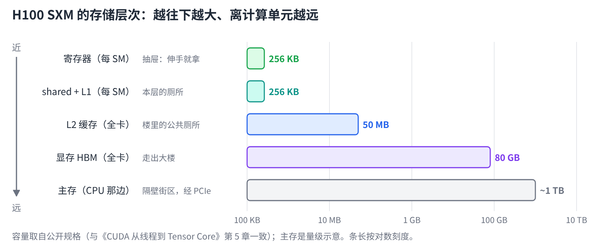
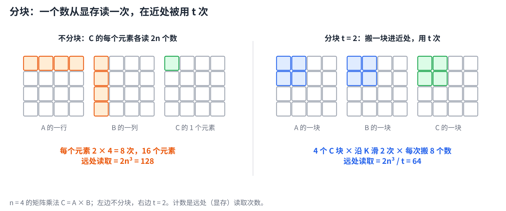
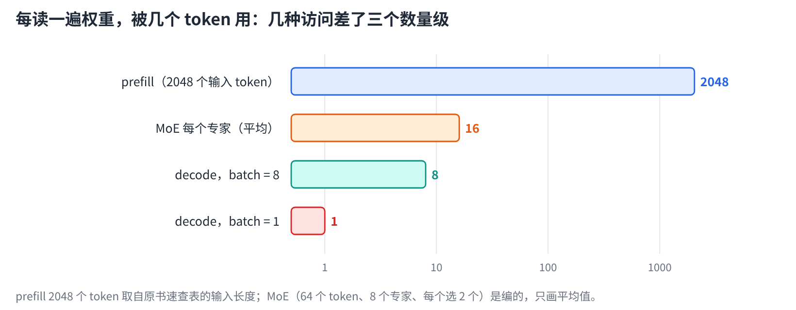
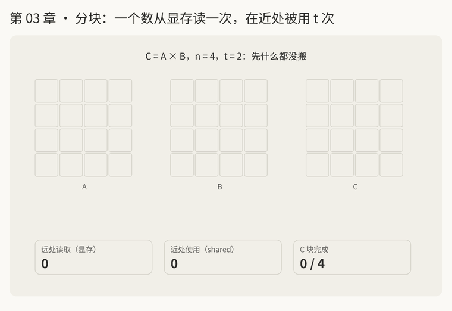

第 03 章 · 从存储程序到数据流执行：存储层次就像大楼里的厕所
本地运行
git clone https://github.com/wikieden/ai-infra-from-constraints
cd ai-infra-from-constraints/code/notebooks
pip install jupyterlab torch numpy
jupyter lab ch03_dataflow_hierarchy.ipynb也可以下载后直接用 VS Code 打开 .ipynb 运行。需要 GPU 的章节在 Colab 里选「代码执行程序 → 更改运行时类型 → GPU」。
本章回答：为什么处理器旁边要摆一层又一层的存储？GPU 和 AI 加速器比 CPU 多做了什么，让数据"读一次、用很多次"？为什么 Transformer 的几种访问不能交给同一套自动缓存？
讲解日期：2026-11-24 · 上一章：第 02 章 一次生成请求的处理过程 · 下一章：第 04 章 系统设计的关键数字
对应原文：materials/ai-infra-book/manuscripts/01-初识 AI Infra.md§1.1.4 L97–L103
本章缩写：CPU = Central Processing Unit（中央 / 处理 / 单元）· GPU = Graphics Processing Unit（图形 / 处理 / 单元）· HBM = High Bandwidth Memory（高 / 带宽 / 内存）· KV = Key-Value（键 / 值）· L1 / L2 = Level 1 / Level 2 cache（一级 / 二级缓存）· MoE = Mixture of Experts（混合 / 专家）· SM = Streaming Multiprocessor（流式 / 多处理器，GPU 里的一组计算核心）。全部缩写见 缩写与术语表
第 02 章说"权重每步都要从显存读到计算单元"。本章往里看一层：显存和计算单元之间不是一步就到，中间隔着好几层存储；越近越快、越小、越贵。
讲解
第一步：存储层次就像大楼里的厕所（2026-11-24）
类比：大楼里的厕所。（原文 L99）所有厕所都集中在一楼，楼上的人每次都要下楼：走得远，还要排队，整座楼的效率被拖慢。每层都建厕所，走几步就到，但要占更多面积，还要铺管道、做维护、定容量。
存储也一样。寄存器、缓存、片上缓冲、显存、主存，就是不同距离、不同容量、不同成本的"数据访问点"：

图 3-1 · H100 SXM 的存储层次（每 SM = 每个流式多处理器，全卡 132 个）。条长是容量，对数刻度；越往下越大、越远、越慢。
| 层 | H100 SXM 的容量 | 大楼里对应 | 谁来管 |
|---|---|---|---|
| 寄存器 | 每 SM 256 KB | 办公桌抽屉，伸手就拿 | 编译器 |
| shared memory + L1 | 每 SM 256 KB | 本层的厕所 | shared 程序员管，L1 硬件管 |
| L2 缓存 | 全卡 50 MB | 楼里的公共大厕所，所有楼层共用 | 硬件 |
| 显存（HBM） | 80 GB | 楼外的公共设施，要走出大楼 | 程序员（分配、拷贝、怎么读） |
| 主存（CPU 那边） | 一台服务器常见几百 GB 到几 TB（量级示意） | 隔壁街区 | 要经过 PCIe |
H100 的数字和《CUDA 从线程到 Tensor Core》第 5 章一致，那里逐层讲了延迟和作用域。
例子：权重一步要读 15.14 GB（第 02 章 Qwen3-8B）。它放得进 80 GB 的显存，但远远放不进 50 MB 的 L2，更放不进每 SM 256 KB 的片上存储。所以每一步，权重都必须从"楼外"一块一块搬进来，用完就让位给下一块。
一句话：存储分层是在"近"和"大"之间折中：越近越快，但越小、越贵。
第二步：从存储程序到数据流执行：把"复用"写进执行结构（2026-11-24）
类比：从"想用就下楼"到"提前把要用的东西搬上来"。 早期的楼只有一楼有厕所；后来每层加了厕所（缓存），还学会提前预约（预取）、几个人结伴去（向量指令）。AI 加速器更进一步：把"谁什么时候用什么"排成固定流程，东西按流程送到每个人手边，用完再换下一批。
原文 L101 的三段演进：
| 阶段 | 做了什么 | 目的 |
|---|---|---|
| 存储程序计算机 | 用可寻址存储器保存指令和数据 | 程序和数据都放在存储里，按地址取 |
| CPU 提速以后 | 寄存器、多级缓存、预取、向量指令、并行执行 | 用更近的存储和更多在途请求减少等待 |
| GPU 和 AI 加速器 | 线程协作用共享内存；矩阵单元沿固定路径复用操作数；搬移引擎和计算单元并行工作；编译器安排分块、布局和缓冲 | 把数据复用变成显式的执行结构，不再只靠缓存碰运气 |
公式：最典型的显式复用是矩阵乘法分块（tiling）。\(C = A \times B\)，三个都是 \(n \times n\) 矩阵：
- \(n\)：矩阵边长；\(t\)：tile（块）边长。
- 不分块时，\(C\) 的每个元素都要从显存读 \(A\) 的一行和 \(B\) 的一列，共 \(2n\) 个数，\(n^2\) 个元素就是 \(2n^3\) 次。
- 分块后，一个 \(t \times t\) 的块先搬进 shared memory（近处），在里面被用 \(t\) 次，所以远处读取降到 \(1/t\)。

图 3-2 · \(n = 4\)、\(t = 2\)：不分块要从显存读 128 次，分块后 64 次。tile 越大，远处读取越少，但近处存储要放得下。
例子：\(n = 4\)。
| 做法 | 远处（显存）读取次数 |
|---|---|
| 不分块 | \(2 \times 4^3 = 128\) |
| 分块 \(t = 2\) | \(128 / 2 = 64\) |
| 分块 \(t = 4\)（整个矩阵一块） | \(128 / 4 = 32\) |
场景代码：CUDA 里的 shared memory 分块，核心就这几行（完整推导见《CUDA 从线程到 Tensor Core》第 13 章）：
__shared__ float As[T][T], Bs[T][T]; // 近处的小仓库：本层的厕所
for (int k0 = 0; k0 < n; k0 += T) { // 沿 K 方向一块一块滑
As[ty][tx] = A[row * n + (k0 + tx)]; // 每个数从显存读 1 次……
Bs[ty][tx] = B[(k0 + ty) * n + col];
__syncthreads(); // 整块到齐再算
for (int k = 0; k < T; ++k)
acc += As[ty][k] * Bs[k][tx]; // ……在近处被用 T 次
__syncthreads(); // 用完再换下一块
}
一句话：CPU 靠缓存"猜"哪些数据会再用；AI 加速器把"读一次、用多次"直接排进执行流程：分块、缓冲、搬移和计算并行。
第三步：Transformer 的几种访问，复用范围各不相同（2026-11-24）
类比：不同的人用厕所的习惯完全不同。 开大会时几百人同时要用（集中、可预测）；平时一个人一会儿去一趟（零散）；还有人只用某一层的某一间（固定分配）。一套统一的管理办法照顾不了所有情况。
原文 L103：prefill、decode、KV 访问和专家路由的复用范围不同，不能只靠一套自动缓存策略。
公式：用"一份数据读一次，被用几次"衡量复用：
例子（权重按"每读一遍，被几个 token 用"算；MoE 的数是编的）：
| 访问 | 一次读进来的数据被谁用 | 每读一遍权重被几个 token 用 |
|---|---|---|
| prefill，2048 个输入 token | 同一次调用里所有输入 token | 2048 |
| decode，batch = 1 | 只有 1 个新 token | 1 |
| decode，batch = 8 | 8 个请求各 1 个新 token | 8 |
| KV 访问 | 只服务自己这个请求，每步整份读一遍 | 每份 KV 每步只被本请求的 1 个新 token 用 |
| MoE 专家路由：64 个 token，8 个专家，每个 token 选 2 个 | 只有被路由到这个专家的 token | 平均 \(64 \times 2 / 8 = 16\)，但各专家多少不均 |

图 3-3 · 每读一遍权重被几个 token 用（对数刻度）。prefill 天然复用很高；单请求 decode 只有 1；batch 和 MoE 介于中间，而且 MoE 各专家并不均匀。
所以加速器要把计算单元、局部存储和数据通路一起设计：prefill 要的是算力，decode 要的是带宽和 batch，KV 要的是容量和按请求管理，MoE 还要处理不均匀。第 05 章会把这些差别换算成时间。
补基础：MoE 是什么、为什么只激活一部分参数，见《超越 Transformer》目录里的 MoE 阶段。
一句话：同一个模型里，不同访问的复用次数能差三个数量级，所以加速器不能只靠一套缓存，要把计算、存储、数据通路按这些访问一起设计。
动画演示：分块让远处读取降到 1/t

可交互版：animations/03-dataflow-hierarchy.html（滑块：tile 边长 \(t\) = 1 / 2 / 4 / 8，矩阵边长固定 \(n = 8\)，看远处读取次数怎么变）。
怎么看：
- 左边是 \(C = A \times B\)；每一帧，\(A\) 的一个横条块和 \(B\) 的一个竖条块被搬进近处（闪一下），对应第二步；
- 计数器"远处读取"每搬一块加 \(2t^2\)，"近处使用"每算一次加一次；
- \(t = 1\) 就是不分块；\(t\) 每翻一倍，远处读取减半（第二步的公式）。
练习与作答记录
题 1（第一步）：下面三样数据，在一次 decode 里最可能放在哪一层？为什么？（a）这一步正在被矩阵单元乘的一小块权重；（b）这个请求已经存下的整份 KV 缓存；（c）实例还没启动时的模型文件。
作答记录：（待作答）
题 2（第二步）：\(n = 6\)，tile 边长 \(t = 3\)。不分块和分块各要从显存读多少次？如果 \(t\) 一直加大到 \(n\)，还有什么限制？
作答记录：（待作答）
题 3（第三步）：一个 MoE 层有 16 个专家，每个 token 选 4 个，一批 32 个 token。平均每个专家分到几个 token？如果其中一个专家分到了 20 个，另一个只分到 1 个，对"读一遍专家权重、被用几次"意味着什么？
作答记录：（待作答）
口诀
厕所修在楼层边，近的小来远的宽；
读一次来用多遍，分块缓冲写成链；
prefill、decode、KV、专家，复用各不同，一套缓存管不全。
本章复习卡片
I07（存储层次的折中）、I08（分块的远处读取公式）、I09（四种访问的复用范围）。练习做完后，按答错、卡住的地方再补。
附录 · 延伸阅读
留给以后深入学习用，不影响本章主线。★ 是建议先读的。
推荐阅读
| 读什么 | 读哪里 | 读它为了什么 |
|---|---|---|
| ★ AII 第 1 章 | §1.1.4 L97–L103 | 本章原文，三段话 |
| ★ 《CUDA 从线程到 Tensor Core》第 5 章 | 全章 | H100 每层存储的容量、延迟、作用域和谁来管 |
| 《CUDA 从线程到 Tensor Core》第 13 章 | 第三、四步 | 分块怎么让每个数从显存读一次、用 32 次 |
| AII 第 4 章 | 加速器架构 | 矩阵单元、片上缓冲、搬移引擎的具体设计（原书后续章节） |
| AISPE 第 7 章 | 中英对照 materials/ai-systems-performance-engineering/docs/chapters/ |
GPU 内存访问模式的分析与调优 |
数学原理
- 计数：不分块时 \(C\) 的 \(n^2\) 个元素各读 \(2n\) 个数，共 \(2n^3\)；分块后每个读进来的数在近处被用 \(t\) 次，远处读取除以 \(t\)。
- 平均与不均匀：MoE 平均每专家 token 数 = token 数 × 每 token 选几个 ÷ 专家数；平均数掩盖了各专家之间的差异。
公式清单
| 公式 | 意思 |
|---|---|
| 远处读取（不分块）\(= 2n^3\) | \(n \times n\) 矩阵乘法 |
| 远处读取（分块）\(= 2n^3 / t\) | \(t\)：tile 边长，近处要放得下两个 \(t \times t\) 块 |
| 复用次数 \(=\) 运算次数 \(/\) 远处读取次数 | 衡量"读一次、用几次" |
| MoE 平均 \(= \text{tokens} \times k / E\) | \(k\)：每 token 选几个专家；\(E\)：专家数 |
代码对照：把本章的数字用代码算一遍
纯 Python，不需要 GPU。代码在仓库本地
ai-infra/solutions/chapter-code/ch03_dataflow_hierarchy.py，配套测试tests/test_ch03.py：
bash cd ai-infra/solutions/chapter-code uv run python ch03_dataflow_hierarchy.py # 一步一步打印 uv run pytest tests/test_ch03.py
讲义 ↔ 代码：
| 讲义 | 公式 | 写法 | 跑出来 |
|---|---|---|---|
| 第一步 H100 存储层次 | 容量对比 | LEVELS |
每 SM 256 KB … 显存 80 GB |
| 第二步 \(n = 4\) 不分块 | \(2n^3\) | far_reads(4) |
128 |
| 第二步 \(n = 4\)、\(t = 2\) / \(t = 4\) | \(2n^3 / t\) | far_reads(4, 2)、far_reads(4, 4) |
64、32 |
| 第二步 逐块模拟核对公式 | 一块块数 | simulate_tiled(4, 2) |
64 |
| 第三步 MoE 平均 | \(64 \times 2 / 8\) | moe_avg(64, 8, 2) |
16 |
关键几行：
def simulate_tiled(n, t):
reads = 0
for _ in range(n // t): # C 的块行
for _ in range(n // t): # C 的块列
for _ in range(n // t): # 沿 K 方向滑动
reads += 2 * t * t # A、B 各搬一个 t×t 块进近处
return reads # = (n/t)^3 × 2t² = 2n³/t
代码里才看得到的 3 件事：
simulate_tiled是三重循环一块块数出来的，和公式 \(2n^3/t\) 对上，说明公式没有漏算；要求 \(n\) 能被 \(t\) 整除，否则边缘块要单独处理。- \(t = n\) 时远处读取最少，但近处要同时放下两个 \(n \times n\) 块；真实 kernel 的 \(t\) 受 shared memory 容量限制（每 SM 最多 228 KB）。
- MoE 的
moe_avg只给平均数；真实路由的分布要看具体 token，代码里没有模拟不均匀。
自己改一改（不影响练习答案）：
- 把
far_reads(8, t)的 \(t\) 依次取 1、2、4、8，看远处读取怎么减半。 - 算一算 \(t = 32\) 时，两个 float32 的 \(t \times t\) 块要多少 KB，和每 SM 的 shared memory 比一比。
- 把
moe_avg的专家数从 8 改成 64，看平均每个专家还剩几个 token。